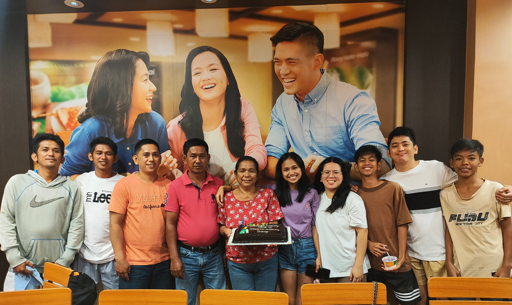

Hello! I am April Joy Panaligan, an aspiring Information Technology student with a passion for learning, creating, and improving myself. I believe in continuous growth and embracing challenges that help me become better in both academics and personal life. My journey has taught me the importance of perseverance and adaptability in achieving my dreams.
I enjoy working on hands-on projects, exploring new ideas, and collaborating with others. Throughout my journey, I have learned to value discipline, creativity, and resilience—traits that help me push forward in everything I do. These experiences have shaped my approach to problem-solving and innovation.
As a student, I am committed to excellence. I always aim to balance my studies, personal interests, and responsibilities while staying motivated and focused on my goals. In the future, I hope to apply my skills in real-world engineering projects that make a positive impact.

I grew up in a supportive and loving family that has always encouraged me to go after my dreams. My family values dedication, honesty, and respect—principles that shaped who I am today. Their unwavering support has been the foundation of my confidence and ambition.
Each member of my family has played a meaningful role in my life. They inspire me to stay strong during challenges and remind me of the importance of staying humble no matter how far I go. From my parents' guidance to my siblings' camaraderie, I cherish the lessons they've imparted.
Our bond is filled with shared experiences, laughter, and lessons that I carry with me every day. My family remains my greatest motivation in pursuing a better future. I strive to honor their sacrifices by achieving success and giving back to them.
I enjoy discovering new activities that help me relax, learn, and express myself. Whether it's exploring creative projects, engaging in outdoor adventures, or improving my skills, I always find joy in staying active and productive. These hobbies keep me energized and inspired outside of my academic pursuits.
Some of my favorite hobbies include photography, digital design, watching tiktoks, and reading topics about personal development. Photography allows me to capture moments and tell stories visually, while digital design fuels my creative side.
These interests allow me to balance my everyday responsibilities while still having fun and learning something new. They also help me develop skills that complement my studies, such as attention to detail and innovative thinking. Overall, they contribute to my well-rounded growth as an individual.
Skill: Problem-solving. I am capable of analyzing situations and finding effective solutions, especially in academic tasks and real-life situations. This skill has helped me overcome obstacles in my coursework and personal challenges.
Strengths: I am adaptable, hardworking, reflective, and willing to grow. I stay motivated even when facing uncertainties, and I strive to improve myself step by step. My adaptability allows me to thrive in changing environments, while my hard work ensures consistent progress.
Additionally, my reflective nature helps me learn from experiences and make better decisions. These qualities have been key to my academic success and personal development. I continue to build on them to achieve long-term goals.
I originally dreamed of becoming a civil engineer, but BSU offered Automotive Engineering Technology. While taking my first year, I questioned whether this path was truly for me. One of my professors, an electronics engineer, advised me that life is not a race. He encouraged me to think ahead, even as early as my first year. His guidance led me to shift to BSIT—a field that opened new opportunities for me.
This change was a pivotal moment that taught me the value of flexibility and foresight. I realized that career paths can evolve, and it's important to align them with personal interests and strengths. The transition helped me discover my passion for technology and information systems.
Looking back, I'm grateful for the experiences in Automotive Engineering Technology, as they built my foundational skills. Now in BSIT, I feel more aligned with my goals and excited about future possibilities. This journey has reinforced my belief in continuous learning and adaptation.
My mission is to build a stable career and explore different countries. I want to create a future where I can support myself, help my family, and experience the world beyond my comfort zone. Achieving financial stability will allow me to pursue adventures and contribute meaningfully to my loved ones.
Traveling to various countries will broaden my perspectives and enrich my understanding of diverse cultures. It will also provide opportunities to learn from global innovations in my field. Ultimately, I aim to balance professional success with personal fulfillment.
By helping my family, I hope to repay the support they've given me throughout my life. This mission drives me to work hard and stay focused on growth. I envision a life where I can inspire others through my achievements and experiences.
I have been an achiever since elementary. I won a poem-writing contest in Grade 6, graduated with honors in elementary, with honors in junior high school, and with high honors in senior high school. During my time in Automotive Engineering Technology, I became a Dean's Lister. These early successes built my confidence and work ethic.
My academic honors reflect my dedication to learning and excellence. The poem-writing win sparked my interest in creative expression, which I still enjoy today. Graduating with high honors in senior high school was a proud milestone that prepared me for university challenges.
Becoming a Dean's Lister in Automotive Engineering Technology was a testament to my hard work in a new field. These achievements motivate me to continue striving for excellence. I look forward to adding more accomplishments as I progress in my career.
If you'd like to reach me for school projects, collaborations, or inquiries, feel free to message me through any of the contact details provided below. I make sure to respond as soon as I can. I'm always open to networking and discussing ideas related to engineering and technology.
Thank you for visiting my personal website! I hope you learned more about who I am and what I’m passionate about. Feel free to connect if you share similar interests or want to collaborate. Your feedback is always welcome to help me improve.